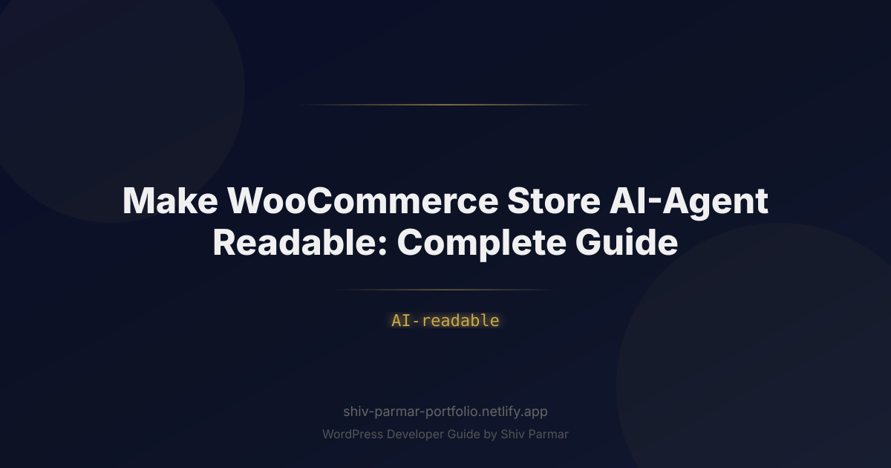

Make WooCommerce Store AI-Agent Readable: Complete | Shiv Parmar
Table of Contents
E-commerce is undergoing a seismic architectural shift. For over two decades, digital storefronts were designed exclusively for human eyes—prioritizing hero banners, lifestyle imagery, neuromarketing color palettes, and emotional sales copy. However, consumer buying behavior is increasingly mediated by autonomous artificial intelligence agents. From ChatGPT and Claude to Perplexity, Google Gemini, and personal shopper bots powered by open-source Large Language Models (LLMs), algorithms are now discovering, comparing, and purchasing products on behalf of consumers.
When an autonomous agent searches the web to fulfill an intent like "find the most durable waterproof hiking boots under $200 with a wide toe box and get them delivered by Thursday," it does not care about your aesthetic typography, interactive sliders, or promotional pop-ups. It scans for clean, unambiguous, machine-readable product data. If your WooCommerce store buries product dimensions inside an unindexed tab, serves pricing dynamically via client-side JavaScript, or lacks rigorous structured content, the AI agent will simply bypass your catalog in favor of a competitor whose store it can reliably parse in milliseconds.
Making your WooCommerce store AI-readable is no longer an experimental optimization—it is the modern foundation of digital distribution. This comprehensive guide walks you through the technical, structural, and semantic transformations required to turn your WordPress-powered store into an optimized, agent-friendly e-commerce hub that synthetic shoppers can discover, evaluate, and transact with effortlessly.
What is an AI-Readable WooCommerce Store?
An AI-readable WooCommerce store is an e-commerce platform engineered so that Large Language Models, web scrapers, and autonomous task agents can parse, understand, and extract product entities, attributes, policies, and availability without human intervention or visual interpretation. Unlike traditional human-centric web design, which emphasizes visual hierarchy and graphical layout, an AI-first architecture relies on clean data schemas, unambiguous semantics, deterministic navigation pathways, and lightweight programmatic interfaces.
Traditional search engines index keywords and backlink graphs to serve a list of blue links to a human user. In contrast, AI search engines and autonomous purchasing agents ingest unstructured or semi-structured web data, convert it into semantic embeddings, perform reasoning over the extracted attributes, and synthesize a single definitive answer or take a programmatic action (such as executing an order). When an agent visits your WooCommerce site, it evaluates the underlying data layer to answer questions such as:
- What is the precise SKU, brand, and manufacturer part number?
- Is this item currently in stock, and what are the exact shipping lead times to a specific postal code?
- What are the objective physical specifications (weight, dimensions, material composition, certifications) separate from marketing rhetoric?
- What are the exact constraints regarding returns, warranties, and regional compatibility?
If this data is presented cleanly as structured content, the agent assigns a high confidence score to your product. If the data is ambiguous, conflicting, or rendered behind complex client-side scripts, the agent's confidence drops, and your product is excluded from the generated recommendation or autonomous purchase workflow.
Why AI-Readable Storefronts Matter in 2026
In 2026, the digital marketplace has transitioned from "search-and-browse" to "prompt-and-delegate." Instead of spending two hours filtering categories across four browser tabs, buyers define their constraints to an AI interface that scans dozens of vendors simultaneously. This behavioral transformation fundamentally alters e-commerce discovery, traffic generation, and conversion funnels.
The rise of zero-click commerce and conversational commerce means that AI models act as algorithmic gatekeepers. If your WooCommerce store fails to deliver standardized, high-density machine-readable information, you face complete algorithmic invisibility. Search engines are no longer just indexing your pages; their AI agents are evaluating the operational reliability of your data.
| Feature / Characteristic | Human-Centric WooCommerce Store | AI-Agent Readable WooCommerce Store |
|---|---|---|
| Primary Interface | Visual layout, typography, UI/UX design | JSON-LD, REST APIs, Semantic HTML5, llms.txt |
| Content Priority | Persuasive copywriting, emotional imagery | Granular specifications, verifiable facts, attributes |
| Rendering Dependency | Client-side JavaScript, hydration, CSS animations | Server-rendered static DOM, clean microdata feeds |
| Discovery Path | Hierarchical navigation menus, visual search filters | Schema entity graphs, deterministic sitemaps, vector endpoints |
| Evaluation Metric | Time on page, bounce rate, visual click-through rate | Token density, data freshness, semantic retrieval precision |
| Conversion Trigger | Compelling Call-to-Action (CTA) buttons | Machine-readable pricing, clear return policies, instant checkout hooks |
Furthermore, autonomous agent workflows are beginning to utilize standards such as the Model Context Protocol (MCP) and decentralized commerce protocols. If an agent cannot programmatically confirm that your product meets every single specification provided by the consumer, it cannot risk making a false recommendation or an erroneous financial transaction on behalf of its user.
Step-by-Step Guide to Making Your WooCommerce Store AI-Agent Ready
Step 1: Implement Comprehensive JSON-LD Product Schema
While default WooCommerce installations include basic Schema.org markup, it is frequently incomplete. Autonomous agents require deep, interconnected entity graphs that define not just price and title, but GTINs, MPNs, return policies, shipping matrices, and aggregate ratings. Relying on default microdata or shallow schema leaves critical gaps.
You can enhance the native WooCommerce structured data array via your theme's functions.php file or a dedicated custom plugin. Below is an implementation that injects comprehensive product properties, merchant return policies, and shipping parameters into your product schema:
add_filter('woocommerce_structured_data_product', 'enhance_woocommerce_ai_schema', 10, 2);
function enhance_woocommerce_ai_schema($markup, $product) {
if (!is_a($product, 'WC_Product')) {
return $markup;
}
$product_id = $product->get_id();
// Add Global Trade Item Number (GTIN) and Manufacturer Part Number (MPN)
$gtin = get_post_meta($product_id, '_custom_gtin', true);
$mpn = get_post_meta($product_id, '_custom_mpn', true);
if ($gtin) {
$markup['gtin13'] = esc_attr($gtin);
}
if ($mpn) {
$markup['mpn'] = esc_attr($mpn);
}
// Explicitly define brand entity
$markup['brand'] = array(
'@type' => 'Brand',
'name' => get_post_meta($product_id, '_custom_brand_name', true) ?: get_bloginfo('name')
);
// Deepen Offer details: Return Policy and Shipping
if (isset($markup['offers']) && is_array($markup['offers'])) {
foreach ($markup['offers'] as $key => $offer) {
// Define Return Policy Entity
$markup['offers'][$key]['hasMerchantReturnPolicy'] = array(
'@type' => 'MerchantReturnPolicy',
'applicableCountry' => 'US',
'returnPolicyCategory' => 'https://schema.org/MerchantReturnFiniteReturnWindow',
'merchantReturnDays' => 30,
'returnMethod' => 'https://schema.org/ReturnByMail',
'returnFees' => 'https://schema.org/FreeReturn'
);
// Define Shipping Details Entity
$markup['offers'][$key]['shippingDetails'] = array(
'@type' => 'OfferShippingDetails',
'shippingRate' => array(
'@type' => 'MonetaryAmount',
'value' => '0.00',
'currency' => get_woocommerce_currency()
),
'deliveryTime' => array(
'@type' => 'ShippingDeliveryTime',
'handlingTime' => array(
'@type' => 'QuantitativeValue',
'minValue' => 0,
'maxValue' => 1,
'unitCode' => 'd'
),
'transitTime' => array(
'@type' => 'QuantitativeValue',
'minValue' => 2,
'maxValue' => 4,
'unitCode' => 'd'
)
)
);
}
}
return $markup;
}
This level of structured content informs the AI agent of operational factors directly from the initial markup scrape, eliminating the need to search through FAQ pages or shipping policy documents to confirm whether an item qualifies for a customer's specific purchase constraints.
Step 2: Deploy an llms.txt and llms-full.txt File
The emerging web standard for synthetic content consumers is the llms.txt file. Positioned at the root directory of your domain (e.g., https://yourstore.com/llms.txt), this file acts as a curated, markdown-formatted directory designed specifically to feed foundational context into an LLM's context window without HTML bloat.
Create a static file or dynamic WordPress rewrite rule serving a clean plain-text markdown file that outlines your store's taxonomy, core product catalog, return policies, and machine endpoints:
# Your Brand Name - E-Commerce Catalog & Policies
> High-performance outdoor gear, technical apparel, and camping equipment.
## Store Rules & Policies
- Standard Shipping: Free 2-4 day shipping on all orders over $50 within the continental US.
- Returns: 30-day no-questions-asked return policy via prepaid mailer.
- Warranties: Lifetime guarantee on structural hardware; 2-year warranty on waterproof membranes.
- Currency: USD ($).
## Core Product Categories
- [Waterproof Hiking Boots](/category-boots.md): Men's and Women's technical footwear for rough terrain.
- [Ultralight Tents](/category-tents.md): 1-person to 4-person backpacking shelters under 3 lbs.
- [Technical Outerwear](/category-apparel.md): Hard-shell and soft-shell jackets rated 20k/20k breathability.
## API & Structured Endpoints
- Public Read Catalog: https://yourstore.com/wp-json/wc/v3/products/ai-catalog
- Complete Product Spec Sheet: https://yourstore.com/llms-full.txt
By providing an llms.txt file, you allow agents operating on constrained context windows or strict token budgets to immediately understand your store's domain authority, primary product lines, and operational constraints without parsing megabytes of HTML, CSS, and script tags.
Step 3: Restructure Product Data for Deterministic Parsing
Human shoppers often tolerate marketing vagueness like "lightweight" or "super durable." AI agents, conversely, operate on quantitative comparisons. If an agent is tasked with finding a "frying pan free of PTFE and PFOA weighing under 1.2 kg," vague marketing narrative in the product description will register as low relevance.
Structure your product specifications into clear, discrete WordPress attributes rather than bundling them into the main rich-text content editor. Use global attributes (configured under Products > Attributes) so that taxonomy relations are strictly maintained across your database:
- Material Composition: Use explicit scientific or industrial terminology (e.g., "7075-T6 Aluminum" instead of "Aircraft-grade metal").
- Dimensions & Weight: Provide discrete values with standard metric and imperial units (e.g., "Weight: 450g / 15.8oz").
- Certifications & Compliance: Explicitly state certifications (e.g., "OEKO-TEX Standard 100", "IPX8 Waterproof", "UL Listed").
- Compatibility: Explicitly list compatible models, operating systems, or standards (e.g., "Fits: 22mm watch lugs", "Compatible with: Qi2 wireless charging").
Render these attributes cleanly in semantic HTML tables within your product templates. Avoid accordion wrappers that dynamically load specs via AJAX after user clicks, as many lightweight scraping agents do not trigger dynamic DOM events.
Step 4: Expose a Lightweight, Public Read-Only JSON Catalog Endpoint
While the authenticated WooCommerce REST API is excellent for management, AI agents conducting web-scale extraction often require fast, lightweight public access to current catalog state without OAuth handshakes. You can expose an unauthenticated, highly cached, public read-only endpoint optimized for machine ingestion.
Add the following code to register a dedicated REST route that outputs compact, high-density product data formatted specifically for AI context ingestion:
add_action('rest_api_init', function () {
register_rest_route('ai-agent/v1', '/products', array(
'methods' => 'GET',
'callback' => 'get_ai_optimized_product_feed',
'permission_callback' => '__return_true', // Public access for search crawlers
));
});
function get_ai_optimized_product_feed($request) {
$args = array(
'status' => 'publish',
'limit' => 100,
'paginate' => true,
'page' => $request->get_param('page') ? intval($request->get_param('page')) : 1,
);
$products = wc_get_products($args);
$data = array();
foreach ($products->products as $product) {
$attributes = array();
foreach ($product->get_attributes() as $attr_name => $attr) {
if ($attr->is_taxonomy()) {
$terms = wc_get_product_terms($product->get_id(), $attr->get_name(), array('fields' => 'names'));
$attributes[$attr_name] = $terms;
} else {
$attributes[$attr_name] = $attr->get_options();
}
}
$data[] = array(
'id' => $product->get_id(),
'sku' => $product->get_sku(),
'name' => $product->get_name(),
'price' => $product->get_price(),
'currency' => get_woocommerce_currency(),
'in_stock' => $product->is_in_stock(),
'stock_quantity' => $product->get_stock_quantity(),
'permalink' => $product->get_permalink(),
'attributes' => $attributes,
'summary' => wp_strip_all_tags($product->get_short_description()),
);
}
$response = new WP_REST_Response($data, 200);
// Cache the response via HTTP headers to protect server resources
$response->header('Cache-Control', 'public, max-age=3600');
return $response;
}
When an agent identifies this endpoint (referenced in your llms.txt or site headers), it can consume your entire catalog's inventory state, pricing, and technical attributes in a few low-latency HTTP requests, avoiding hundreds of heavy HTML page renders.
Step 5: Audit and Configure Robots.txt and Security Firewalls
Many WordPress stores inadvertently block AI agents by using default, aggressive web application firewall (WAF) rules or overly restrictive robots.txt files. Security plugins like Wordfence or Cloudflare's default Bot Management configurations often classify emerging AI user agents as malicious web scrapers, returning HTTP 403 Forbidden or presenting Cloudflare Captcha challenges.
An autonomous agent cannot solve a visual Turnstile or Captcha challenge during a programmatic search operation. If encountered, the agent marks your store as unreachable and drops the product from consideration.
Ensure your robots.txt explicitly permits recognized, legitimate AI search bots while still blocking predatory or non-compliant scrapers. Add the following directives to your root robots.txt:
User-agent: GPTBot
Allow: /
Allow: /wp-json/ai-agent/v1/
User-agent: ClaudeBot
Allow: /
Allow: /wp-json/ai-agent/v1/
User-agent: PerplexityBot
Allow: /
Allow: /wp-json/ai-agent/v1/
User-agent: Google-Extended
Allow: /
# Block scraping of private system files
Disallow: /wp-admin/
Disallow: /cart/
Disallow: /checkout/
Disallow: /my-account/
Sitemap: https://yourstore.com/sitemap_index.xml
Inside Cloudflare or your hosting control panel, navigate to your security configurations and create a WAF bypass rule allowing requests where the User Agent matches legitimate retrieval bots (e.g., PerplexityBot, ClaudeBot, GPTBot) as long as they target your public content and catalog endpoints.
Step 6: Remove Hydration Barriers and Client-Side Obfuscation
Modern WooCommerce design frequently incorporates headless frameworks, single-page application (SPA) transitions, and dynamic tab rendering driven by React, Vue, or heavy jQuery libraries. While visual hydration provides smooth transitions for human users, it frequently breaks AI scrapers that do not run a headless Chromium instance to save compute resources.
If essential product information (such as ingredients, dimensions, stock status, or variations) is loaded asynchronously via client-side fetches after the document load event, AI parsers only see an empty container:
<!-- BAD: Inaccessible to non-JavaScript crawlers -->
<div id="product-specs-container" data-product-id="1234"></div>
<script>
fetch('/api/specs/1234').then(res => res.json()).then(renderSpecs);
</script>
<!-- GOOD: Fully server-rendered Semantic HTML -->
<section id="product-specifications" itemscope itemtype="https://schema.org/Product">
<h3>Technical Specifications</h3>
<table>
<tr>
<th>Chassis Material</th>
<td itemprop="material">Anodized 6061 Aluminum</td>
</tr>
<tr>
<th>Operating Weight</th>
<td itemprop="weight">1.15 kg (2.53 lbs)</td>
</tr>
</table>
</section>
Ensure that all critical product entities are baked directly into the initial server-rendered HTML response. Semantic HTML5 elements (<main>, <article>, <section>, <table>) should be used instead of infinite nestings of unsemantic <div> and <span> tags.
Best Practices for Maintaining AI-Readable Stores
Transforming your store into an AI-readable platform is not a one-time adjustment. Just as search engine optimization demands ongoing maintenance, keeping your product data optimized for autonomous agents requires systematic discipline.
- Maintain Real-Time Data Freshness: Stale inventory data is catastrophic for agentic purchasing. If an AI agent purchases an item on behalf of a user and the order is immediately cancelled due to an out-of-stock condition, your store will receive a negative reliability signal across that agent's ecosystem. Utilize webhooks or automated cache invalidation to purge CDN caches the instant an item goes out of stock.
- Standardize Categorical Taxonomies: Avoid cute, idiosyncratic category labels. A human might figure out that "Foot Huggers" means socks, but an AI agent categorizing items under standard GS1 or Google Product Taxonomy nodes will fail to map the product accurately. Keep internal category slugs mapped directly to canonical e-commerce taxonomies.
- Sanitize Variation Relationships: Variable products in WooCommerce are often messy. Ensure parent-child relationships between variable products and their child variations are systematically declared. Every variation must possess its own unique SKU, price, stock status, and explicit distinguishing attributes (e.g., Color, Size).
- Provide Deterministic Search Capabilities: Implement a search architecture that accepts natural language queries and filters cleanly via GET parameters. If an agent queries your internal search URL with
?filter_color=black&filter_size=11, the resulting page must deterministically display only the matching items rather than defaulting to generic site results. - Monitor Bot Traffic Logs: Inspect your server access logs weekly to observe how AI user agents interact with your store. Check for high frequencies of 404s, 403s, or slow response times (>500ms) on product pages and machine-readable feeds. Fast Time-to-First-Byte (TTFB) on JSON and HTML payloads directly improves an agent's ability to process your catalog within its execution timeouts.
Common Mistakes to Avoid
As store owners rush to embrace generative engine optimization, several common technical anti-patterns undermine their efforts.
1. Hiding Key Information Inside Images or PDF Manuals
Never rely on graphical spec sheets, infographics, or embedded PDF manuals to convey critical product information. While multimodal LLMs are improving at OCR (Optical Character Recognition), processing visual tokens is computationally expensive and introduces unnecessary latency. Autonomous shopping agents often discard images during initial evaluation passes to conserve resources. All essential specs must be duplicated in plain text and structured schema within the DOM.
2. Over-Optimizing with "AI-Spam" Copywriting
Some merchants believe that packing their product descriptions with massive blocks of generated text answering every conceivable conversational query helps LLMs discover their items. In practice, this creates token bloat. Agents prefer concise, accurate structured content over 2,000 words of generic, AI-generated filler copy that buries the actual technical parameters.
3. Serving Conflicting Data Points
Ensure that data rendered visually on the screen matches the JSON-LD schema exactly. If your JSON-LD claims a product is $49.99, but your page displays a dynamic sale price of $39.99 (rendered via a third-party currency or dynamic pricing plugin), the parsing agent detects a data integrity conflict. When faced with conflicting information, autonomous agents will deprioritize the product to avoid transaction errors.
4. Hard-Coding Structured Data into Theme Templates
Avoid manually writing static Schema markup directly inside your theme's template files (such as single-product.php). This frequently causes validation errors when products lack certain fields or when plugins inject conflicting schema blocks. Always manipulate WooCommerce's native structured data filters (like woocommerce_structured_data_product) or use a dedicated, well-maintained SEO plugin to ensure that markup is dynamically validated against live product properties.
5. Blocking Headless Browsers Indiscriminately
While protecting your server from malicious DDoS attacks is vital, aggressive Cloudflare, Wordfence, or AWS WAF heuristics often confuse autonomous AI agents with bad actors. Avoid rate limits that trigger instantly on rapid sequential requests from verified AI bot IP ranges. Instead, funnel automated traffic to your high-speed, cached REST endpoints or markdown files to protect database resources while maintaining complete accessibility for legitimate AI commerce crawlers.
Conclusion
As AI agents, conversational search engines, and autonomous shoppers reshape modern e-commerce, preparing your catalog for machine consumption is no longer optional. Transforming your store's architecture with clear, structured content ensures that intelligent algorithms can effortlessly discover, interpret, and recommend your inventory. By actively making your WooCommerce store AI-readable, you position your brand at the forefront of the next technological shift in online retail.
Ultimately, the success of conversational commerce and agent-driven transactions hinges on the depth and accuracy of your product data. Implementing clean schema markup, optimized data feeds, and reliable API endpoints ensures that AI agents receive real-time, error-free information, keeping your brand competitive in an increasingly automated marketplace.
Ready to future-proof your store but need an expert to handle the technical implementation? Shiv Parmar is available for WordPress development work worldwide. Whether you need tailored schema enhancements, API optimizations, or a comprehensive technical overhaul to make your WooCommerce store truly AI-ready, reach out to Shiv today to bring your store's architecture up to modern standards.